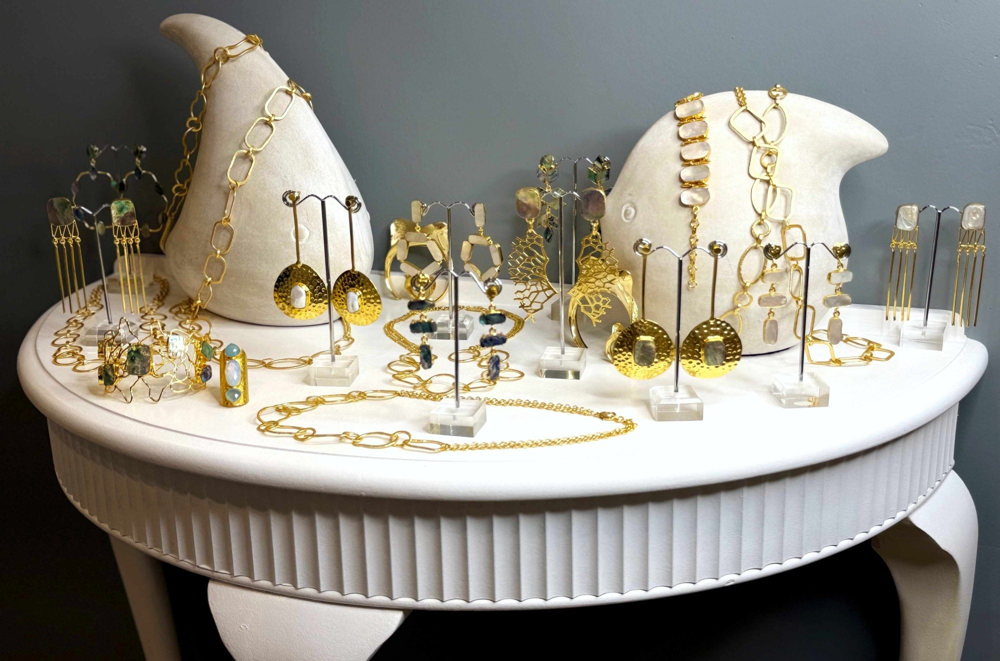

Second Skin is the jewellery at NITA Gallery: gold-toned earrings, necklaces, cuffs and rings, set with shell and pearl. Pieces to wear, to give, and to keep.
Up close
The collection · 22 pieces
Prices in Australian dollars. Delivery worldwide, priced by country in your cart. Or come and see the pieces in the gallery, or write to us about any of them.
Visit
Come in.
Have a look.
Stay a while.
Surry Hills, Sydney NSW 2010
Open in Maps ↗
Parking round here is a bit of a nightmare, so we'd suggest catching a train. If you do need to drive, there's a car park right over the road.
Open by appointment, any day. Can't make our opening hours? Write or call us and we'll open the gallery for you, any day of the week, including outside the hours above.
Call Ritushka 0405 441 516 · Nick 0403 835 467
Now open
Come and see it in person
The doors are open. Come and wander through the art, the scarves and the jewellery, and tell us what you think (kindly, please).
Contact
Write
to us.
Questions about the paintings, the photographs, the scarves, the jewellery, or visiting? Send us a message and we'll reply personally.
studio@nickbrandphotography.com
Or call: Ritushka 0405 441 516 · Nick 0403 835 467
NITA Gallery · 68 Campbell Street, Surry Hills